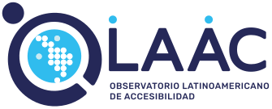

¿Por qué importa?
Un libro accesible sirve también a personas con baja visión, dislexia o dificultad lectora, a quien escucha en voz alta y a quien necesita ajustar tamaño y contraste.
Cuando un libro nace accesible, nadie tiene que esperar meses una adaptación ni quedarse sin leerlo.
Versión digital accesible
Este mismo contenido está en línea, listo para lector de pantalla, ampliación o lectura en voz alta.
olaac.org/fil-2026
Impulsan


El Proyecto Léelo es impulsado por Ciegos Sinaloa IAP y el Observatorio Latinoamericano de Accesibilidad AC.
olaac.org · proyectoleelo.org · ciegossinaloa.org
Una invitación a las casas editoriales para crear libros accesibles y publicarlos en la Biblioteca Inclusiva Léelo.
FIL Culiacán 20264.ª Feria Internacional del Libro · Módulo de Ciegos Sinaloa IAP
Léelo es una red colaborativa que produce y difunde libros en múltiples formatos para personas con discapacidad visual o dificultad lectora. Su Biblioteca Inclusiva crece libro a libro gracias a instituciones, editoriales y personas voluntarias.
Conoce Léelo
olaac.org/leelo
Academia OLAAC
Gratuito · con certificado
Del manuscrito a un EPUB 3 que cumple EPUB Accessibility 1.1 del W3C, el estándar que define qué es un libro digital accesible.
Todo con herramientas gratuitas del Consorcio DAISY.
Inscríbete
academia.olaac.org
Para casas editoriales
Empieza hoy. Escanea el código y lleva este folleto en formato digital.
olaac.org/
fil-2026